震惊！一群老行者在深夜里聊起这种话题...
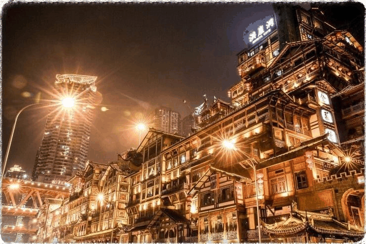
当大盘的夜幕降临，而渝州还正是夕日欲颓之时，
一群老行者们🙊又在微信群中进行着今天的日常……
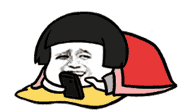

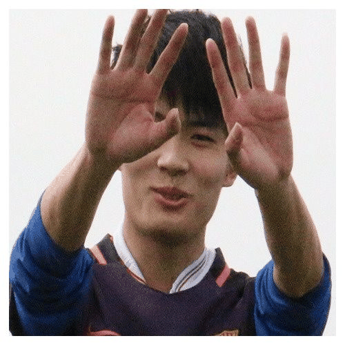
大盘才子李较瘦
听说这次团队又来了十几个特别漂亮的小姐姐？🤔
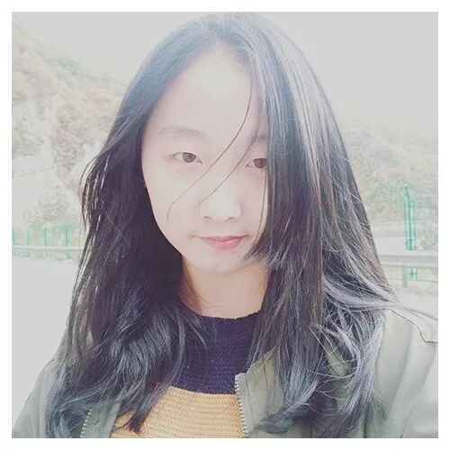
找不到词形容的聪哥
而且个个超萌超可爱？😍（笑容逐渐变态....）
帅到辣眼睛的沈某
停停停！小姐姐雨女无瓜！！
贴心小哥哥江同学
难道小哥哥没有人权了？新来的小哥哥也超帅的好叭！🤒
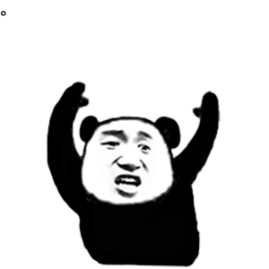
幕后操作黑手孚孚
咳咳~恰巧我这里有行者篇的介绍你们要看嘛？
不愿透露姓名的行者萌新
那必须的啊！！😊
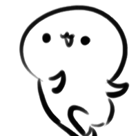
美丽儒雅的雯雯姐
来，让我康康！（震声）
行者酱
老铁没毛病，肘子！！😎
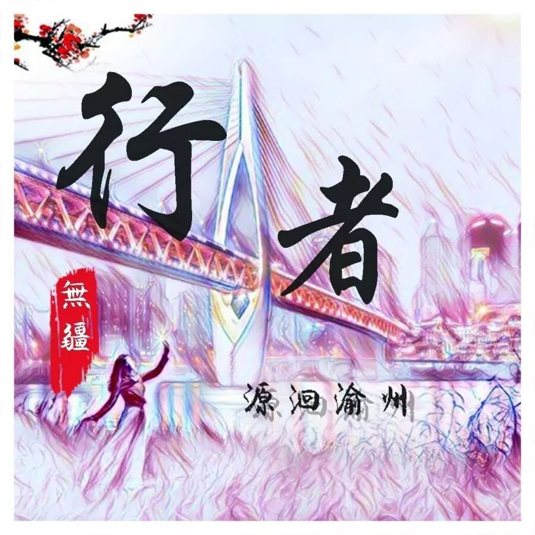

从2017年的文溯齐鲁开始，
行者们丈量世界的脚步从未停歇。
2019年暑假，在新的文化苦旅开始之前，
行者们有留给你的悄悄话……
指导老师
邹靓靓
了解社会需求，
锻炼自身本领，
明确发展方向，
实现人生价值！
选择一条你真正想走的路，往后余生才会有迹可循。
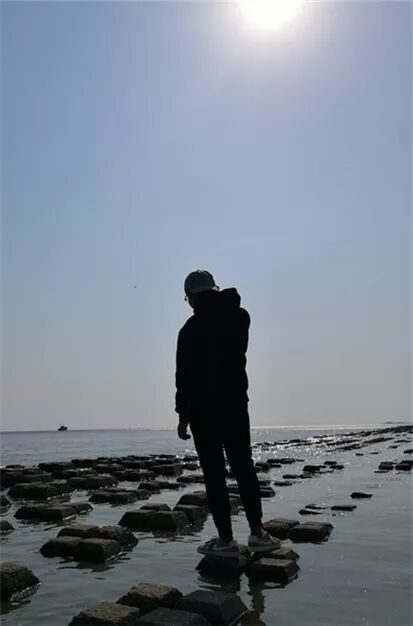
善始善终
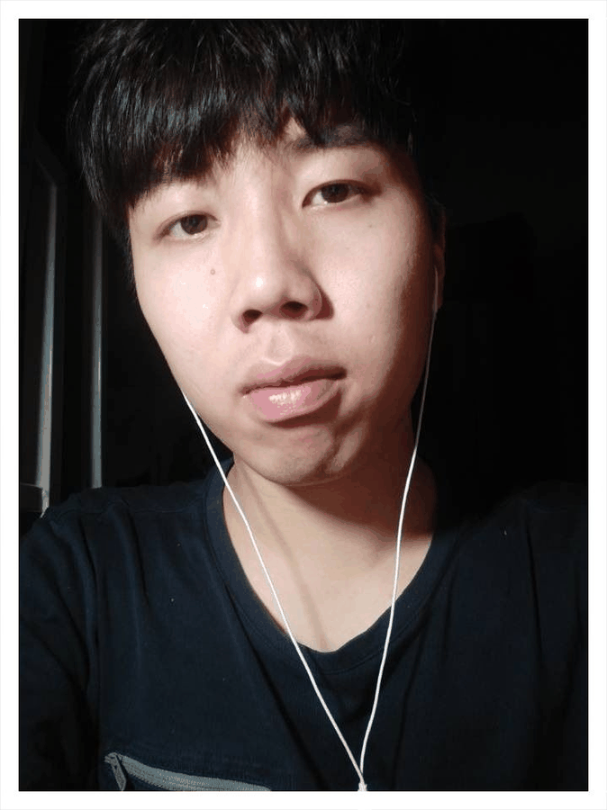
宣传组 陈嘉颖
天地不过是飘摇的逆旅，昼夜不过是光阴的门户。
珍惜过去，
满意现在，
乐观未来。
文字组
段智然
你永远奔驰在轮回的悲剧，
一路扬着朝圣的长旗。
文字组
王耿
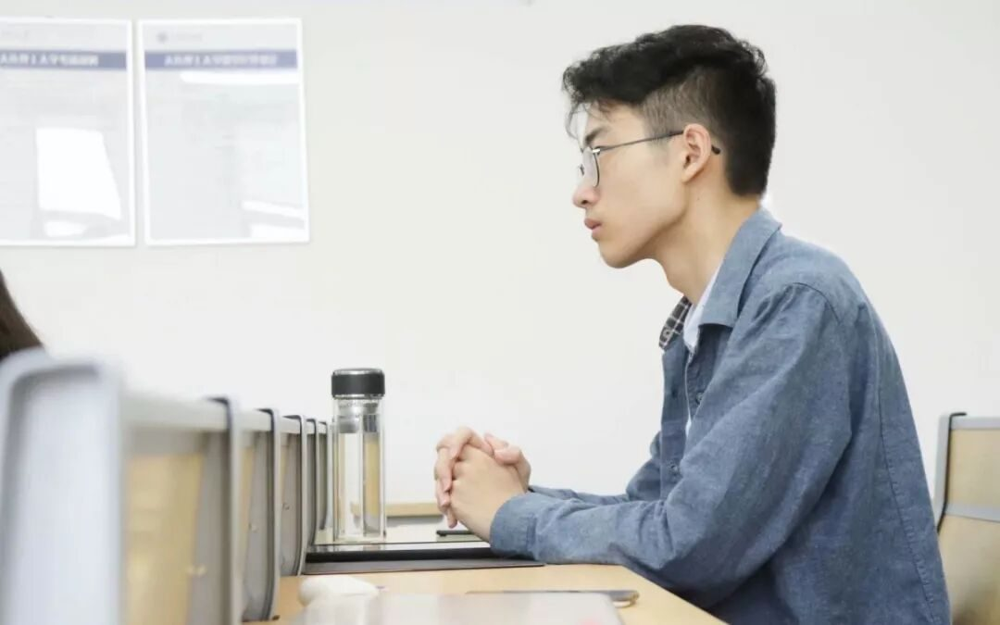
The inspiration in my heart can never be sold to life cheaply.
文字组 黄玲
吹灭读书灯，
一身都是月。
我像一个拾荒者，收集你的过往，慢慢变成时间的沉酿
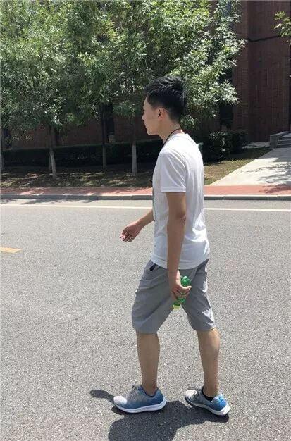
路漫漫其修远兮
吾将上下而求索
从不缺少文化与精神，只是缺少发现它们的一双眼睛和一个镜头。
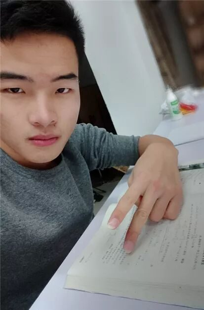
采访组
陶奇
到一个城市，首先要了解它的历史和经历，而不是急于享受它带给你的舒适环境和好心情。这是对它最起码的尊重。
采访组
袁欣怡
一生温暖纯良，不舍爱与自由
不自夸，不自弃。
不三分热度，
不冷若冰霜。
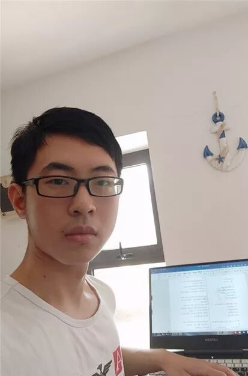
我们最终都要去远行，最终都要和稚嫩的自己告别。
接受失败,但不选择放弃。
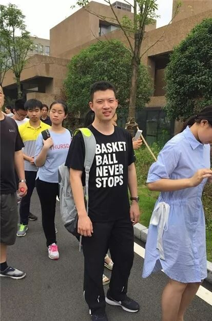
外联组
杨博渊
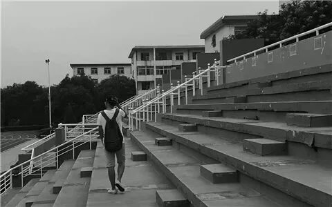
不出去走走，
你会以为这就是世界
非淡泊无以明志
会坚持的不仅只有蜗牛，还有我们！
不积跬步，无以至千里；
不积小流，无以成江海。
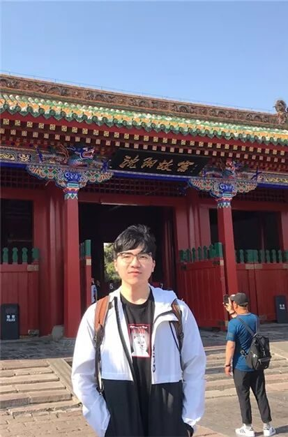

在看完新一期的行者篇后
老行者们不免发出了内心的感慨...
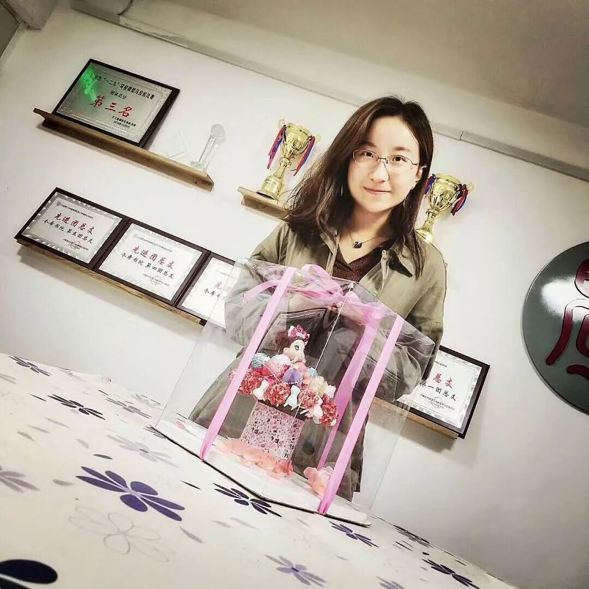
指导老师邹靓靓
期待看到大家去完成一场新的文化苦旅！！💕💕
温柔细腻宋学长
嘿嘿第六期的大家都是蛮可爱哒~
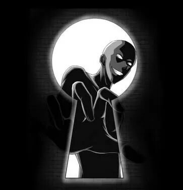
某位不愿透露姓名的老队员
呜呜这次没时间和大家去好遗憾啊T T
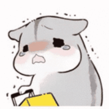
大盘才子李较瘦
看到新一期的力量注入，真好！！😃😃
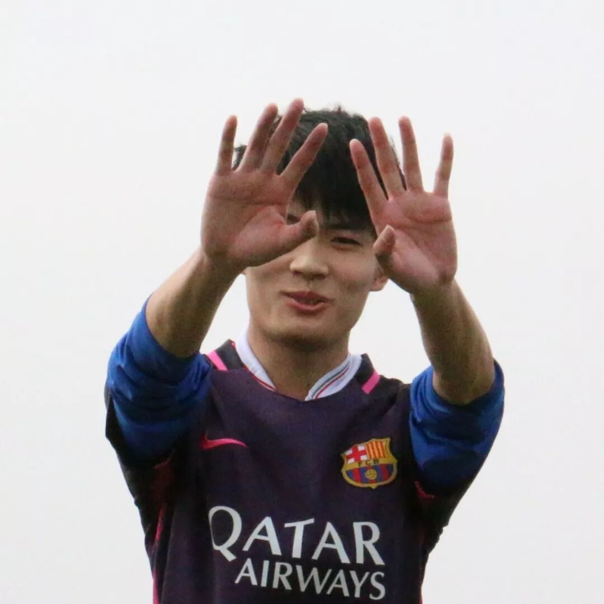
埋头努力科研的晓青
对啊，看大家都做足了准备呢！！
帅到辣眼睛的沈某
听到你们这么说可真开心，我们一定会继续努力的！！！💪💪💪
行者酱
行者酱也会跟着第六期的行者们继续冲鸭gogogo~
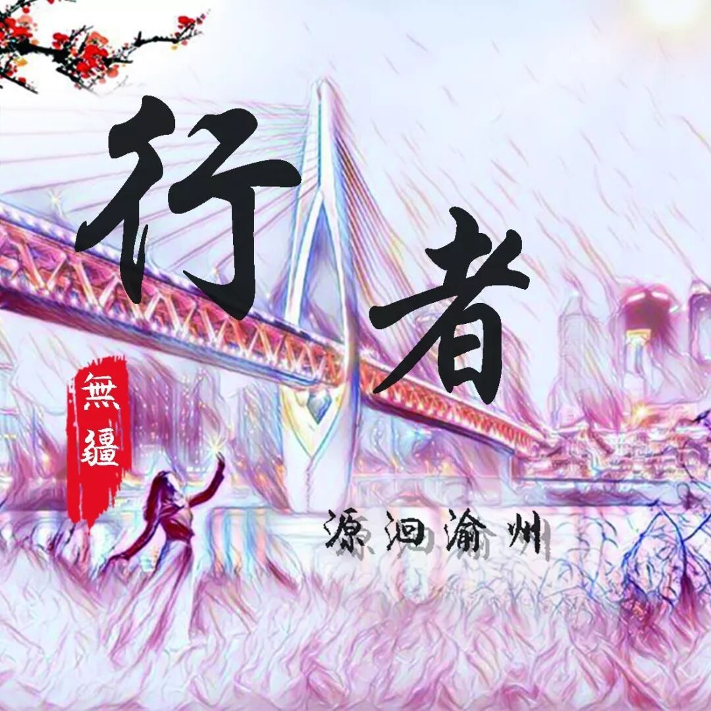
你以为我们是行者？其实我们是dio哒！
看完之后是不是也开始期待本次的旅途了呢？
别着急！
行者无疆·源洄渝州
即将启程
快来做下一个
“云行者”吧！
你
准备好接招了吗？
（关注我关注我关注我）
行者无疆实践团
QQ：2758025831

随行者一起认识世界
长按二维码关注
来源丨行者无疆实践团
文字丨黄玲
责编丨邓子孚
审核丨邓子孚 段智然